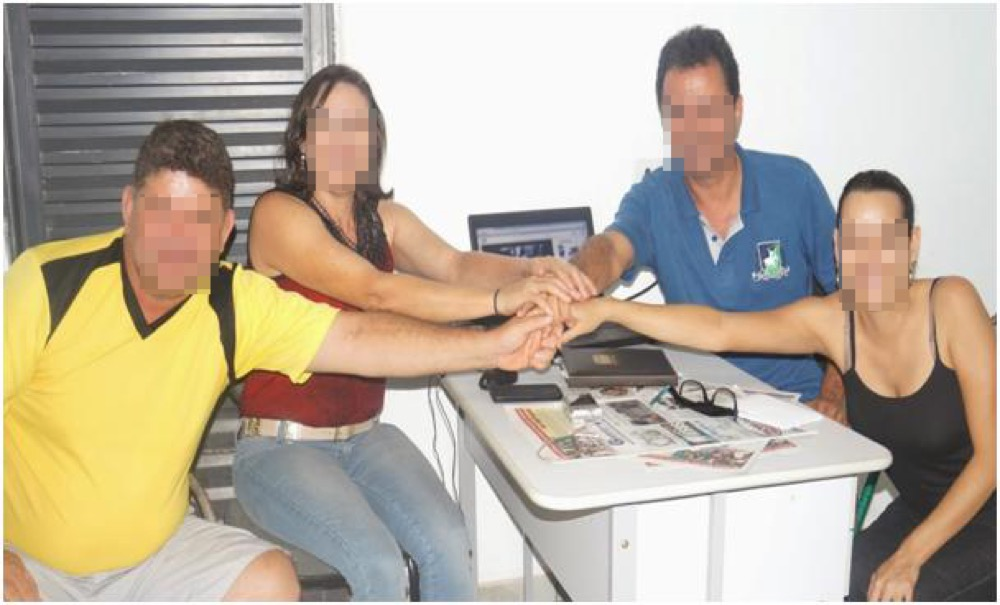
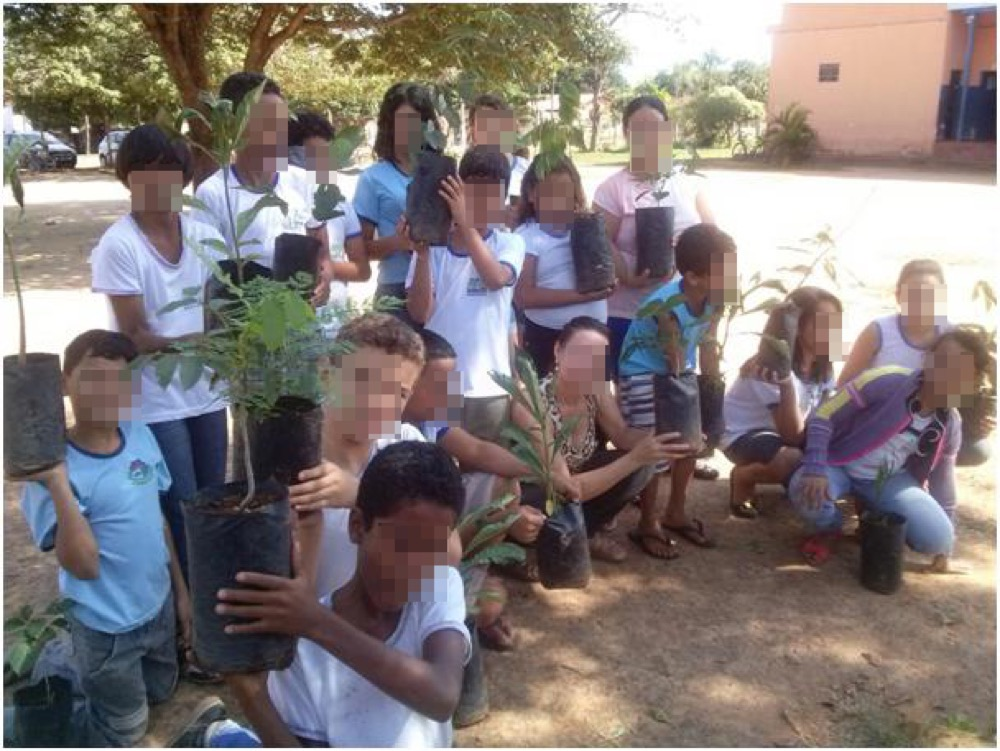
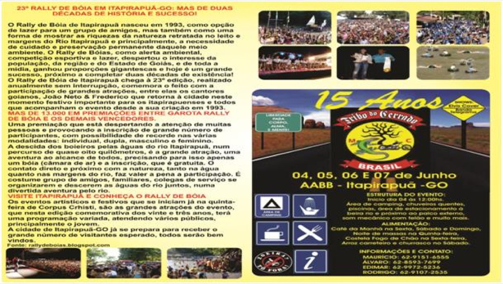
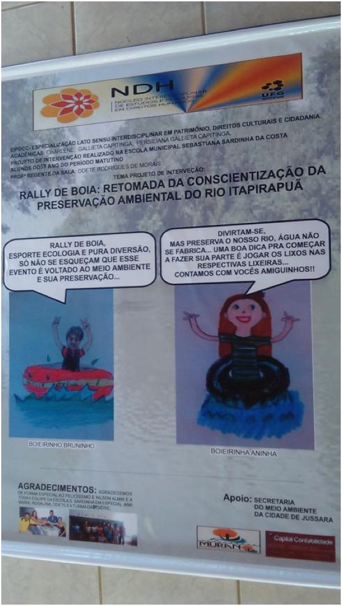

Os presentes relatórios visam abordar as ações de intervenção do projeto “Rally de Boia: Retomada da Conscientização da Preservação Ambiental do Rio Itapirapuã” propostas como atividade de conclusão de curso da Especialização Interdisciplinar em Patrimônio, Direitos Cultural e Cidadania pela Universidade Federal de Goiás (UFG). O trabalho foi desenvolvido em dupla, composta por mãe e filha, ambas cursando a especialização. Nosso objeto de estudo foi o Patrimônio Cultural Rally de Boia de Itapirapuã-GO. As intervenções realizadas visaram a retomada da originalidade desse evento cultural, focalizando a preservação ambiental e cultural, priorizando a sustentabilidade, com ações afirmativas na preocupação de garantir um planeta melhor para a nossa futura geração. O nosso ponto de partida foram as atividades empíricas. Investigamos a comunidade sobre o que pensavam a respeito do Rally de Boia quando se tratava das temáticas ambientais. Com posse dos relatos, procuramos os organizadores do evento para firmamos uma parceria objetivando o enriquecimento das temáticas ecológicas. Na efetivação das ações, realizamos um trabalho com discentes e docentes da Escola Municipal Sebastiana Sardinha da Costa, especificamente com os estudantes do ensino fundamental, subsidiando o Rally de Boia como um grande potencial na conscientização da preservação e valorização desse recurso hídrico importantíssimo para todos os seres vivos e em especial na preservação do próprio evento cultural. Realizamos outras ações afirmativas em articulação com a comunidade de Itapirapuã durante a realização do rally, ocorrido no feriado de Corpus Christi no ano de 2015.
O presente artigo objetiva abordar as ações de intervenção realizadas pelo projeto Rally de Boia: Retomada da Conscientização da Preservação Ambiental do Rio Itapirapuã, proposto na disciplina Metodologia de Pesquisa da Pós-Graduação Lato Sensu em Patrimônio, Direitos Culturais e Cidadania, oferecida pela UFG-GO. O objeto das ações de intervenção foi o Rally de Boia, Patrimônio Cultural do munícipio de Itapirapuã-GO.
Conforme destacam Kunzler e Oliveira,
De fato, cada bem material guarda saberes e modos de fazer de natureza absolutamente imaterial ou intangível e, no limite, os saberes, sentimentos e modos de fazer findam por materializar-se em expressões físicas de suas simbologias e significados. Por trás de uma igreja há religiosidades, simbologias e modos de construção e decoração que pertencem ao território do intangível, ou seja, que podem ser perdidos mesmo com a permanência ou preservação do monumento (KUNZLER; OLIVEIRA, 2014, p. 8).
36
Diante das fontes teóricas estudadas, considera-se que o rio e o evento Rally de Boia podem ser defendidos em duas vias: como patrimônio imaterial, quando se trata do evento e das atrações culturais já que esses não são palpáveis. Mas, e quando se trata da preservação do rio, que patrimônio é esse? Já que o rio não sai do lugar, conseguimos pegá-lo quando usamos a sua água; não seria, então, patrimônio tangível e material?
Bens materiais são aqueles sobre suporte físico, representados pelas edificações, paisagens, conjuntos históricos urbanos e bens móveis e integrados à arquitetura. Já os bens imateriais (ou de natureza imaterial) são os oriundos do saber e experiência humanos, que não dependem diretamente de um suporte físico para sua existência. A Organização das Nações Unidas para a Educação, a Ciência e a Cultura (Unesco) considera como patrimônio cultural Imaterial "as práticas, representações, expressões, conhecimentos e técnicas – com os instrumentos, objetos, artefatos e lugares culturais que lhes são associados – que as comunidades, os grupos e, em alguns casos os indivíduos, reconhecem como parte integrante de seu patrimônio cultural (KUNZLER; OLIVEIRA, 2014, p.7).
O fato da escolha desse patrimônio como objeto de estudo de nossa intervenção é porque ao longo dos anos percebemos que esse evento estava perdendo a sua originalidade, especialmente na preservação das temáticas ambientais. Portanto, o objetivo foi articular ações junto aos coordenadores do evento de forma a aprimorar ideias que priorizassem a preservação ambiental, focalizando a sustentabilidade e a proteção do manancial do rio Itapirapuã, considerado como fator principal na preservação desse patrimônio cultural.
A nossa primeira atividade foi realizar uma entrevista com um dos criadores do rally, o senhor Nilson Almir Pereira do Nascimento. Nesta oportunidade, tivemos o privilégio de conhecer as etapas desse evento cultural, ocorridas durante os seus vinte e três anos de tradição no feriado de Corpus Christi, ou seja, de quinta-feira a domingo. Sobretudo, essas etapas serão abordadas no desenvolvimento deste relatório, mas, durante o diálogo com o entrevistado, percebemos também a sua insatisfação de ver o acontecimento perdendo a sua originalidade na priorização das temáticas ambiental e cultural.
Ouvimos a comunidade e constatamos a mesma insatisfação, especialmente dos professores, que disseram não gostar do rumo que o evento está tomando, visto que os coordenadores não têm estratégias persuasivas com relação à proteção ecológica, sendo que as margens do rio ficam tomadas de lixo após a realização do rally. De posse desses relatórios, fomos nos reunir com os coordenadores do evento. O primeiro impacto da conversa não foi muito favorável, pois pareciam não compreender o nosso objetivo, mas na medida em que o diálogo foi amadurecendo o encontro foi exitoso e ao final da reunião fizemos um compromisso de parceria, objetivando somar ideias no fortalecimento da preservação do nosso pertencimento cultural.
Buscamos, também, socializar com discentes e docentes da Escola Municipal Sebastiana Sardinha da Costa, realizando atividades educativas oportunizando a formação de cidadãos tolerantes, críticos, investigativos, pesquisadores e capaz de apresentar soluções para as problemáticas enfrentadas.
Para Paulo Freire, educar é construir, é libertar o homem do determinismo, passando a reconhecer o papel da História, e a assunção da identidade cultural, tanto na dimensão individual quanto na sua relação com os colegas discentes e docentes, ou seja, sem o respeito ao outro, às diferenças, às experiências vividas antes de chegar à escola não haverá aprendizagem (SILVA, 2014, p. 5).
37
A intervenção contemplou ainda várias ações significativas realizadas com a comunidade e outras executadas durante a realização do evento, que também serão elencadas no desenvolvimento deste relatório. Sobretudo, podemos salientar que diante de tantas barreiras enfrentadas no decorrer dessa caminhada, as ações foram positivas, pois, muitos objetivos foram alcançados.
Com a realização das intervenções no evento constatamos muitas mudanças no comportamento das pessoas, possibilitando cidadãos mais conscientes, respeitando, preservando e valorizando a memória coletiva de um povo. Segundo Junqueira 2014, [...] “ações de educação patrimonial sejam implementadas tanto no ensino formal como no ensino não formal, pois, por meio delas será possível despertar o interesse dos membros da comunidade para a relevância dos seus bens culturais.” Portanto, há muitos anos não se via tantas ações significativas estimulando a reflexão dos participantes na propagação e valorização do recurso hídrico rio Itapirapuã.
1. DESENVOLVIMENTO
2.1 OBJETIVOS GERAIS
Promover a conscientização de membros da comunidade de Itapirapuã sobre a importância do evento Rally de Boia como um meio para ações de preservação e conscientização dos recursos ambientais locais.
2.2 OBJETIVOS ESPECÍFICOS
Valorizar o evento Rally de Boia como patrimônio cultural, como pertencimento e tradição Itapirapuense;
Criar condições para os alunos desenvolverem atividades contextualizadas ao tema, conscientizando uma transformação ambiental e social;
Valorizar a arte dentro da leitura e da cultura como fonte de conhecimento;
Desenvolver atividades lúdicas valorizando o patrimônio local;
Promover a cultura através da arte na criação de paródias e de dramatização teatral abordando a problemática trabalhada;
Incentivar a valorização e a preservação do rio Itapirapuã;
Incentivar o reflorestamento da nascente do manancial do rio Itapirapuã;
Reaproveitar materiais recicláveis para confeccionar objetos de utilidades;
Incentivar a criação de frases educativas na conscientização ambiental;
Promover a criação de faixas, cartazes, folders através de frases de conscientização da valorização do patrimônio local.
2.3 METODOLOGIA
O presente estudo surgiu através do interesse em transformar a realidade sobre o evento cultural Rally de Boia do município de Itapirapuã, buscando o resgate da problemática inicial relacionada à preservação ambiental. A pesquisa de campo é uma das metodologias importantes na construção desse processo, portanto, o início do trabalho se deu através de uma aula campo realizada às margens do rio para diagnosticar os problemas de agressão que esse patrimônio vem sofrendo.
As etapas para o desenvolvimento do projeto de intervenção foram as seguintes:
Organização de um estande com materiais selecionados para esta pesquisa;
Enfoque não só nas pesquisas de campo através das entrevistas, mas também nas leituras das fontes teóricas sugeridas;
Levantamento de questionamentos ao longo da leitura do material bibliográfico. O entendimento das informações dos textos exige um trabalho que segue uma progressão quanto a sua complexidade;
Utilização dos seguintes gêneros textuais: desenhos, paródias, poemas, poesias, redação e criação de frases educativas na preservação e valorização do patrimônio;
Realização de parceria com a secretaria do Meio Ambiente objetivando adquirir mudas de árvores para reflorestar a nascente do manancial rio Itapirapuã;
Estímulo ao registro escrito, como também à utilização dos recursos tecnológicos, com o objetivo de arquivar a memória da cultura dos Itapirapuense;
Incentivo ao reflorestamento da nascente do manancial do rio Itapirapuã;
Incentivo a cada aluno para trazer uma muda de uma árvore;
Realização de uma aula campo com os alunos na nascente do rio para plantar as mudas das árvores.
38
2.4 PROCEDIMENTOS
As intervenções do projeto foram realizadas em várias etapas. No primeiro momento nos reunimos com alguns dos coordenadores do Rally de Boia, apresentando a necessidade de realizarmos algumas intervenções priorizando a temática ambiental. Como já falamos anteriormente, houve um embate no primeiro encontro, mas à medida que a interação foi sendo articulada o encontro foi ficando proveitoso e fizemos uma parceria com alguns dos membros da organização, visando enriquecer ideias para fortalecer as ações afirmativas contextualizadas às temáticas ambientais e priorizando a sustentabilidade.
Segundo Junqueira (2014), “nenhuma atividade é sustentável para sempre, tendo em vista que toda ação causa degradação, porém deve-se tentar usufruir do meio, seja urbano ou ambiental, tentando causar o mínimo impacto possível. ” Entendemos que o Rally de Boia tem um grande potencial para realizar a mudança de consciência do público-alvo, mas, são necessárias estratégias persuasivas objetivando promover a educação patrimonial.
Nessa perspectiva, desenvolvemos um trabalho na Escola Municipal Sebastiana Sardinha da Costa, oportunizando o lúdico para que pudéssemos desenvolver o interesse dos estudantes. Durante a realização desse estudo promovemos várias ações significativas e conseguimos envolver a atenção e o interesse do alunado. Trabalhamos com os alunos do 1º (primeiro) ao 5º (quinto) ano do ensino fundamental do período matutino dessa instituição de ensino.
2.4.1 Entrevista com Nilson Almir - Criador do Rally de Boia

Imagem 1: Felicíssimo Fonseca (Comissão Organizadora do Rally de Boia), Professora Gallieta, aluna da UFG, Nilson Almir, criador do Rally de Boia e Charlene Gallieta. Fonte: http://nilsonalmir.blogspot.com.br/
Visando apropriar do conhecimento sobre o processo da criação do Rally de Boia, realizamos uma entrevista com um dos criadores do evento, o senhor Nilson Almir Rodrigues do Nascimento. Nesta oportunidade, tivemos o privilégio de conhecer profundamente o processo de evolução desse evento cultural, pois, segundo ele, o rally já passou por três fases diferenciadas.
De acordo com Nilson Almir, a primeira edição do Rally de Boia aconteceu no feriado de Corpus Christi no ano de 1993. Ele afirma que, de 1993 a 1996, “o evento ocorreu modestamente, sem grandes estruturas e sem a divulgação regional”, caminhando somente com ajuda da comunidade. Segundo o entrevistado, o público comparecia para assistir as atrações realizadas.
A segunda fase aconteceu precisamente da 5ª até a 8ª edição do evento. Nesse período, destaca Nilson Almir, o rally ganhou como parceiro:
“Hermenegildo Paniago, gerente do Banco do Brasil, o conhecido Gildo, e vai até o ano 2000, quando as fronteiras do Município foram rompidas pelo evento que ganhou a mídia regional e nacional, foi noticiado no Programa Bom Dia Brasil e Globo Esporte, da TV Globo, ganhou noticiários em telejornais da TV Anhanguera, TV Serra Dourada e TV Brasil Central, e páginas inteiras de jornais como Diário da Manhã. O IBAMA, os Bombeiros, e a Polícia Florestal foram parceiros nesta fase e também a criação e realização de vários eventos paralelos como o Desfile da Garota Rally de Boias, bailes, passeio ciclístico, apresentação de Moto Show e até paraquedismo”.
Segundo Nilson Almir, a terceira fase se iniciou em:
“2001, quando na gestão do prefeito Zacarias Ribeiro de Oliveira, a Prefeitura assumiu pela primeira vez a realização do Rally de Boias, o que garantiu a continuidade do evento que ganhara proporções que inviabilizaria a sua realização pelo MOVIPREI (Movimento de Promoção e Eventos de Itapirapuã). Até então o MOVIPREI era o órgão responsável, juntamente com parcerias firmadas conforme as edições em curso. Foi nesta fase que o Rally de Boias recebeu, na sua programação, shows artísticos de renome, a exemplo da Banda Mr. Gyn, Henrique e Juliano, e, Edy Britto e Samuel”.
39
2.4.2 Ações Realizadas na Escola Sebastiana Sardinha da Costa
No primeiro momento foi realizada uma reunião com o corpo docente, apresentamos o nosso projeto e fomos muito bem recebidas pelos educadores, que se disponibilizaram em colaborar na implementação dessas ações. Uma das atividades promovidas pelos alunos foi a criação de objetos oriundos de materiais recicláveis, conscientizando-os sobre a importância do reaproveitar, do reciclar e do reutilizar.
A sociedade depende dos recursos naturais para sobreviver, e, caso não haja uma preocupação imediata em preservar o meio em que se vive, o risco de entrar em uma grande crise ambiental será grande. Por isso, torna-se urgente sensibilizar as comunidades e os indivíduos quanto à relação que devem manter tanto com o meio ambiente rural, quanto com o meio ambiente urbano (JUNQUEIRA, 2014, p. 13).
Outra ação importante foi a criação de um mascote pelos alunos, objetivando homenagear o patrimônio cultural Rally de Boia. Eles tiveram a oportunidade de expor sua criatividade e após a execução dessa atividade recolhemos todos os desenhos. Em seguida, criamos uma banca avaliadora composta por quatro professores, que selecionaram os trabalhos dos alunos Bruno Fortalo e Ana Carolina da Silva, do 5º Ano B, da professora regente de sala Odete Rodrigues de Morais.
Após a seleção dos desenhos, mandamos confeccionar um banner que foi exposto no hall de entrada durante os dias da realização do evento para as pessoas prestigiarem o trabalho dos alunos. Constatamos que essa ação foi um fator fundamental de incentivo, pois o trabalho foi muito elogiado. A frase de conscientização ambiental criada pelos alunos estimulou os participantes a mudar de atitude e a contribuir na limpeza do ambiente, utilizando as lixeiras feitas com materiais recicláveis para colocar os resíduos.
2.4.3 Ações Afirmativas Realizadas Durante a Apresentação do Evento Rally de Boia do Ano de 2015
No primeiro dia da realização do evento, ou seja, quinta-feira do feriado de Corpus Christi, ocorreu o passeio ciclístico. Houve a participação de vários ciclistas, saindo da Escola Municipal Sebastiana Sardinha da Costa e indo até a beira rio, espaço destinado para a realização do rally. Após a chegada, foi sorteada uma bicicleta para os atletas participantes doada pelo Supermercado Batista, de propriedade de Marcos Pereira do Nascimento. O ganhador da bicicleta foi o adolescente Edimilson Gonzaga dos Anjos.
Após essa atividade esportiva, realizamos outra ação afirmativa envolvendo o público presente, foi a plantação eólica com utilização de balões biodegradáveis. Os balões continham em seu interior sementes de plantas nativas que foram lançadas ao ar às margens do Rio Itapirapuã, evidenciando o reflorestamento da mata ciliar desse manancial. Ficamos muito felizes com a efetivação dessa ação, pois contribuímos para que as pessoas vivenciassem essa técnica de plantação, priorizando a temática ambiental.
2.4.4 Redes Sociais Provoca Mudança no Folder do Evento
Logo após a entrevista que realizamos com Nilson Almir, o criador do evento divulgou a nossa conversa em seu blog, o que trouxe uma repercussão muito positiva. A população Itapirapuense demostrou vontade de conhecer melhor a origem do Rally de Boia e começou a visitar sua página na internet, interessados em conhecer a história desse patrimônio cultural. Isso incentivou os coordenadores a criarem um outro cartaz, abordando não só as festividades que iriam acontecer no evento, mas também a história do Rally de Boia. De fato, as redes sociais foram importantíssimas para a divulgação da memória desse evento cultural. Embasado nesse contexto, vale pontuar a teoria de Lisboa.
40
A utilização das redes sociais como o Facebook, Twitter, Instagran, Linkedlin, como já vimos, são ferramentas de significativa importância estratégica por estar no ciberespaço, lugar comum onde pessoas “atuam” constantemente. Mas não podemos deixar de escolher profissionais específicos para a atuação nas redes sociais, com disponibilidade de tempo e preparação técnica e política para a interação com o público desejado. (LISBOA, 2014, p. 24).
A cibercultura através das redes sociais possibilitou a interação da divulgação do Rally de Boia, contribuindo para que esse patrimônio se torne um pertencimento da população Itapirapuense.
2.4.5 Reflorestamento da Mata Ciliar

Imagem: 2. Alunos e professores do 5º ano do período matutino da Escola Municipal Sebastiana Sardinha da Costa. Foto: Persiliana Gallieta Capitinga.
Ainda convém lembrar de outra ação afirmativa importante que realizamos no dia quatro de junho, durante a realização do evento. A atividade de reflorestamento da mata ciliar com 100 (cem) mudas de plantas nativas da região, adquiridas junto à Secretaria Municipal de Meio Ambiente e Agricultura da cidade de Jussara-Goiás. Nesta ação, tivemos a oportunidade de envolver os alunos da Escola Municipal Sebastiana Sardinha da Costa, bem como o público presente. Foi um momento muito especial, pois tivemos a chance de construir ações evidenciando a sustentabilidade.
2. RESULTADOS OBTIDOS
Através de nossas intervenções, conseguimos obter alguns resultados considerados positivos. O maior deles foi o acordar da comunidade e, principalmente, de boa parte dos integrantes da organização do evento quanto a sua importância real como patrimônio cultural pertencente à comunidade, que, nesse momento, voltou a dar enfoque nas atividades de esporte, lazer, cultura e preservação do meio ambiente. A partir dessa nova visão, os projetos e objetivos atingiram outra dimensão que prospectou resultados maravilhosos como: divulgação do rally em folder e cartazes com ênfase na relevância e história do evento, valorização dos boieiros (os participantes esportistas), exposições de telas e pinturas de um artista da cidade que faz um trabalho de ressocialização, distribuição de árvores nativas aos visitantes, construção de lixeiras com materiais descartáveis e decoração, também com materiais descartáveis.
Toda essa mudança é, de fato, uma retomada aos valores principiantes e originários desse patrimônio cultural e ambiental de Itapirapuã. Fator que foi o motivo maior para a construção desse projeto de intervenção. Portanto, nos permite dizer que valeram a pena todos os nossos esforços durante essa nossa caminhada.
3. CONSIDERAÇÕES FINAIS
Concluo que, ao fazer uma análise e diagnóstico da nossa intervenção, de um modo geral, vejo que os resultados foram positivos. Conseguimos realizar um trabalho muito produtivo na Escola Municipal Sebastiana Sardinha da Costa. Com a conclusão do nosso projeto, acredito que despertamos a comunidade, principalmente em relação aos integrantes da organização, que passaram a vivenciar o evento como patrimônio cultural e ambiental pertencente a Itapirapuã e realizaram diversas atividades importantes que abrilhantaram a programação do Rally de Boia. Podemos destacar, dentre eles, a decoração do hall de entrada simbolizando o rio Itapirapuã, feito com materiais recicláveis e fabricações de lixeiras provindas de materiais descartáveis, demonstrando à sociedade Itapirapuense e visitantes que é preciso valorizar nossos rios e também é possível viver em um ambiente sustentável, resgatando, dessa forma, a origem verdadeira do nosso patrimônio cultural e ambiental Rally de Boia.
41
REFERÊNCIAS
DIAS, Welbia Carla; FILHO, Manuel Ferreira Lima. Patrimônio cultural goiano/tocantinense. Material didático da Especialização Interdisciplinar em Patrimônio, Direitos Culturais e Cidadania. Goiânia: UFG - CIAR, 2014. CD-ROM.
FREIRE, Paulo. Pedagogia da autonomia: saberes necessários à prática educativa. São Paulo: Paz e Terra, 1996. (Coleção Leitura).
JUNQUEIRA, Ivanilda. Educação patrimonial II: recursos, técnicas e estratégias. Material didático da Especialização Interdisciplinar em Patrimônio, Direitos Culturais e Cidadania. Goiânia: UFG - CIAR, 2014. CD-ROM.
KUNZLER, Josiane; OLIVEIRA, Vânia Dolores Estevam de. Patrimônio, direitos culturais e cidadania. Material didático da Especialização Interdisciplinar em Patrimônio, Direitos Culturais e Cidadania. Goiânia: UFG - CIAR, 2014. CD-ROM.
______; ______. As instituições culturais e a sociedade. Material didático da Especialização Interdisciplinar em Patrimônio, Direitos Culturais e Cidadania. Goiânia: UFG - CIAR, 2014. CD-ROM.
LISBOA, Pablo Fabião. Cultura e comunicação – interfaces e perspectiva. Material didático da Especialização Interdisciplinar em Patrimônio, Direitos Culturais e Cidadania. Goiânia: UFG - CIAR, 2014. CD-ROM.
SILVA, Simone Rosa. Educação patrimonial l: ensino formal x ensino não-formal X ensino informal.Material didático da Especialização Interdisciplinar em Patrimônio, Direitos Culturais e Cidadania. Goiânia: UFG - CIAR, 2014. CD-ROM.
“Rally de Boia” Retomada da Conscientização da Preservação Ambiental do Rio Itapirapuã
Aluna: Persiliana Gallieta Capitinga
Polo: Uruaçu
Orientadora Acadêmica: Shirlene Álvares da Silva
Coordenadora de orientação: Simone Rosa da Silva
Anexos
Imagem 3: Felicíssimo Fonseca (Comissão Organizadora), Profª Persiliana Gallieta (UFG), Nilson Almir (Criador do Rally de Boais, junto com Rondon Kairo) e Charlene Gallieta (UFG).Imagem 4: Cartaz (folder) da divulgação do evento antes da manifestação de nossa pesquisa. Fonte: http://www.evento.br.com/eventos-arquivo/705709/23-rally-de-boia-de-itapirapua-go

Imagem 5: Cartaz (folder) da divulgação do evento depois da manifestação de nossa pesquisa.. Fonte: http://www.evento.br.com/eventos-arquivo/705709/23-rally-de-boia-de-itapirapua-go

Imagem 6: Autores do desenho: Aluno Bruno Fortalo e a aluna Ana Carolina Silva, 5º ano, Escola Municipal Sebastiana Sardinha da Costa. Fonte: Persiliana Gallieta Capitinga. Projeto de Intervenção executado no mês de maio e junho de 2015.
INTRODUÇÃO
Cursando a Especialização Lato Sensu Interdisciplinar em Patrimônio, Direitos Culturais e Cidadania, tive a oportunidade de pleitear o conhecimento sobre a temática do Patrimônio Cultural, dos Direitos Autorais e dos Direitos Humanos. Na realização da disciplina Metodologia de Pesquisa tive o privilégio de escrever um projeto sobre um patrimônio cultural de nossa cidade e, em seguida, realizar uma intervenção visando a divulgação, valorização e preservação desse patrimônio.
Nesta ocasião, escrevi sobre o Patrimônio Cultural Rally de Boia de Itapirapuã Goiás, um evento com tradição há vinte e três anos, considerado como patrimônio imaterial, realizado no feriado de Corpus Christi com atrações de quinta-feira a domingo. Segundo Zanirato e Ribeiro (2006), “...patrimônio cultural para designar o conjunto dos bens materiais e imateriais de uma nação, estado, cidade, que constituem herança coletiva, a partir do reconhecimento de sinais de uma identidade, e são transmitidos de geração a geração.”
42
O Rally de Boia foi criado com uma proposta de oferecer aos Itapirapuenses o prestígio ao esporte, lazer e cultura, mas também priorizar atividades direcionadas à proteção do manancial Rio Itapirapuã, com uma temática de conscientização ambiental. Para Chagas (2007), a esse conjunto de determinados bens tangíveis, intangíveis e naturais, que envolvem saberes e práticas, são atribuídos valores que devem ser transmitidos de uma época a outra ou de uma geração a outra.
A inquietação que me levou a escrever sobre o presente Rally de Boia é porque percebi que nos últimos anos o evento foi perdendo a sua origem na priorização das atividades que abordam as questões ambientais, especialmente na preservação do Rio Itapirapuã, considerado como um patrimônio importantíssimo na permanência desse evento cultural, pois sua maior atração é a descida dos boieiros. Sendo assim, a conservação do rio torna-se fundamental para a continuidade desse evento. Na condição de moradora desse município não poderia fechar os olhos para tais fatos. Diante disso, minha filha Charlene e eu nos posicionamos na busca de soluções para a mudança desse contexto.
Charlene é minha filha, aluna dessa pós-graduação, e em dupla realizamos este Projeto de Intervenção no Município de Itapirapuã-GO.
No primeiro momento da realização do projeto recorremos à pesquisa empírica, adaptada a uma proposta de intervenção. Logo após, realizamos uma entrevista com um dos criadores do evento, o senhor Nilson Almir Pereira do Nascimento e com um dos seus organizadores, o senhor Felicíssimo Fonseca. Nesta entrevista conhecemos detalhadamente as fases do Rally de Boia, desde a primeira até a vigésima segunda edição acontecida no ano de 2014, como também pudemos saber as expectativas sobre o evento desse ano de 2015.
Entretanto, nessa reunião, Nilson Almir destacou que o “evento foi idealizado com o intuito de incentivar ações afirmativas no resgate da cultura local e preservação ambiental, sobretudo relacionadas ao patrimônio hídrico, o rio Itapirapuã; pois, o que se nota na atualidade é uma distorção dessa ideologia”, afirma o entrevistado. Diante disso, ficou constatado, pelo então criador do evento, que o mesmo vem perdendo a sua originalidade.
Nesse sentido, a intervenção do nosso projeto consistiu em articular ações afirmativas visando a preservação e valorização do patrimônio cultural Rally de Boia de Itapirapuã, possibilitando retomar a sua originalidade, priorizando as temáticas ambientais. Sobretudo, entendemos que o rally é um grande potencial na transformação de consciência dos participantes, portanto, o nosso tema norteador focalizou a educação ambiental e cultural.
A noção de patrimônio tem se expandido nos últimos anos como senha de reivindicação de cidadania por grupos subalternos que buscam outras formas de marcação social da diferença, via a noção mesmo do patrimônio para reivindicar seus direitos culturais e sociais, via trilha do patrimônio como forma importante de empoderamento. É o que tenho chamado de cidadania patrimonial. (DIAS; FILHO, 2014, p. 22).
Desenvolvemos ações afirmativas em articulação com a Escola Municipal Sebastiana Sardinha da Costa e com a comunidade, bem como outras atividades realizadas durante o evento, que serão abordadas no desenvolvimento deste relatório. Com as práticas conseguimos despertar o interesse da comunidade e fazer com que o rally retomasse a sua originalidade. Há vários anos não víamos um evento com tantas ações que priorizassem a sustentabilidade. As pessoas se envolveram com o mesmo objetivo, na construção de condutas afirmativas, possibilitando a preservação de um planeta melhor para as futuras gerações.
43
2. DESENVOLVIMENTO
As oficinas foram realizadas na Escola Municipal Sebastiana Sardinha da Costa no mês de maio, precisamente nos dias de quintas e sextas-feiras. O público-alvo foi composto pelos alunos do 1º ao 5º ano do ensino fundamental do período matutino. Enquanto as oficinas aconteceram durante o evento, ocorrido no feriado de Corpus Christi, no mês de junho de 2015.
2.1 OBJETIVO GERAL
Promover a conscientização de membros da comunidade de Itapirapuã sobre a importância do evento Rally de Boia como um meio para ações de preservação e conscientização dos recursos ambientais locais.
2.2 OBJETIVOS ESPECÍFICOS
Valorizar o evento Rally de Boia como patrimônio cultural e pertencimento dos Itapirapuenses;
Retomar as origens do Rally de Boia, oportunizando as temáticas ambientais;
Estimular ações afirmativas na valorização e preservação do rio Itapirapuã;
Promover ações educativas priorizando a sustentabilidade.
2.3 METODOLOGIA
O presente estudo surgiu através do interesse em transformar a realidade sobre o evento cultural Rally de Boia do município de Itapirapuã, buscando o resgate da problemática inicial, relacionada à preservação ambiental. A pesquisa de campo é uma das metodologias importantes na construção desse processo, portanto, o início do trabalho se deu através de uma aula campo realizada às margens do rio Itapirapuã para diagnosticar os problemas de agressão que esse patrimônio vem sofrendo.
As etapas para o desenvolvimento do projeto de intervenção foram as seguintes:
Organização de um estande com materiais selecionados para este estudo;
Enfoque não só nas pesquisas-campo através das entrevistas, mas também nas leituras das fontes teóricas sugeridas;
Uso das redes sociais como fonte de comunicação na preservação da memória coletiva;
Realização de uma parceria com a secretaria do Meio Ambiente objetivando adquirir mudas de árvores para reflorestar a nascente do manancial rio Itapirapuã;
Estímulo ao registro escrito, como também à utilização dos recursos tecnológicos com o intuito de arquivar a memória da cultura dos Itapirapuenses;
Construção de um banner com ilustração e frases educativas;
Estímulo à criação de um mascote em homenagem aos boieiros do evento;
Incentivo ao reflorestamento da nascente do manancial do rio Itapirapuã;
Realização de plantação eólica utilizando balões biodegradáveis;
Envolvimento do público presente nas ações efetivadas durante a realização do evento.
2.4 PROCEDIMENTOS
“A avaliação e as medições de resultados ou de não resultados devem se tornar uma rotina em projetos de Educação Patrimonial, [...] devendo estar presente em todas as etapas de realização, e principalmente levar em conta a opinião do público envolvido.” (SILVA, 2014). A realização desse projeto aconteceu em várias etapas, sendo que uma delas foi a fase investigativa, na qual tivemos a oportunidade de ouvir os relatos da comunidade sobre o que pensam a respeito do evento cultural Rally de Boia.
Entretanto, ao ouvir a comunidade, percebemos a insatisfação de algumas pessoas, em especial dos professores, que argumentaram que o evento está perdendo a sua originalidade, invertendo sua ideologia, pois as margens do rio durante a realização da festa ficam repletas de lixo, e afirmaram que os organizadores não têm estratégias criativas com respeito à educação ambiental.
Na Escola Municipal Sebastiana Sardinha da Costa realizamos práticas educativas envolvendo discentes e docentes, focalizando o Rally de Boia como um grande potencial na capacidade de priorizar as temáticas ecológicas, promovendo ações de conscientização e preservação dos recursos ambientais locais. Nessa perspectiva, vale pontuar o pensamento de Junqueira:
44
Quando se toma os fenômenos culturais, como pistas ou indícios, possibilita-se que as comunidades e o indivíduo construam o conhecimento crítico e se apropriem com responsabilidade do seu “patrimônio” e, desse modo, contribuam para o processo de preservação sustentável desses bens, assim como para o fortalecimento dos sentimentos de identidade e cidadania (JUNQUEIRA, 2014, p. 9).
Embasado nesse contexto, pode-se afirmar que as atividades educativas realizadas na instituição mencionada foram pautadas na Educação Patrimonial. Durante as ações nos apropriamos do lúdico objetivando despertar o interesse e a participação do alunado. Nesta mesma perspectiva, afirma Baquero:
[...] no processo de educação também cabe ao mestre um papel ativo: o de cortar, talhar e esculpir os elementos do meio, combiná-los pelos mais variados modos para que eles realizem a tarefa de que ele, mestre, necessita. Deste modo, o processo educativo já se torna trilateralmente ativo: é ativo o aluno, é ativo o mestre, é ativo o meio criado entre eles. (BAQUERO, 2000, p. 27)
As aulas lúdicas possibilitam a socialização de forma mais prazerosa, não podendo ressaltar que é apenas uma brincadeira em si, mas sim um fator importante para o desenvolvimento humano.
2.3.1. Entrevista com o Criador do Evento
Reunimos com o criador do evento, senhor Nilson Almir Pereira do Nascimento, para aprofundar o conhecimento sobre a criação e a evolução do patrimônio cultural Rally de Boia de Itapirapuã, nosso objeto de estudo no projeto de intervenção dessa pós-graduação.
Imagem 1: Felicíssimo Fonseca (Comissão Organizadora do Rally de Boia), Professora Gallieta, aluna da UFG, Nilson Almir, criador do Rally de Boia e Charlene Gallieta. Fonte: http://nilsonalmir.blogspot.com.br/
Durante o diálogo, Nilson Almir nos informou que Itapirapuã era uma cidade com poucas atrações culturais, e que os jovens sentiam falta de evento que focalizasse o esporte, o lazer e a cultura. Em um certo dia, que ele não lembra precisamente, mas é certo que foi nos primeiros meses do primeiro semestre do ano de 1993, uma turma de jovens se reuniu, dentre eles estavam presentes Juceli e Rondon Kairon e, conversando, surgiu a ideia de criar o Rally de Boia na cidade. Nessa época, Nilson Almir era secretário do Esporte e Lazer do município, então, logo após a conversa entre os jovens, Rondon Kairo foi pedir sua ajuda, que abraçou a causa. Vale pontuar a teoria de Silva:
Parcerias entre sociedade civil e poder público nada mais é do que o compartilhamento de responsabilidades, o que só acontece mediante a participação popular. Em vários momentos de elaboração de políticas públicas, tanto na definição de diretrizes, quanto no planejamento, execução, e gestão, seja em qualquer área (cultura, saúde, educação, moradia, segurança pública, etc), a participação popular é um dever e uma forma de exercício da cidadania (SILVA, 2014, p. 17).
Em seguida, os dois foram para a beira do rio visando localizar um lugar propício para a descida dos boieiros, pois, segundo Nilson Almir, essa foi a grande dificuldade, visto que nenhum proprietário às margens do rio queria aceitar os boieiros entrarem em suas propriedades. Nilson Almir destaca que era congregante de uma mesma igreja de um proprietário de terra, terreno esse que era o lugar apropriado a iniciar o Rally de Boia. Essa afinidade foi fundamental para convencer José Lino, dono dessa propriedade. Nilson e Rondon foram conhecer o percurso que os boieiros possivelmente realizariam. Descendo o rio, os jovens perceberam a depredação que o mesmo sofria, com lixo por todos os lados, com muitos vasilhames de agrotóxicos, a mata ciliar devastada pelo desmatamento. Visualizando as agressões, eles constataram que precisariam realizar ações afirmativas, priorizando as temáticas ambientais.
Segundo Nilson Almir,
“Antes da realização do evento a comunidade se mobilizou e fizeram um arrastão de canoa fazendo a limpeza do rio, ou seja, recolhendo os resíduos que o poluía. Durante a realização do evento foram realizadas palestras de conscientização ambiental, reflorestamento das matas ciliares, tudo isso com o propósito de transformação de consciência da comunidade”.
45
De acordo com o entrevistado, a ajuda da comunidade superou suas expectativas, pois vieram pessoas de todos os lados e o evento foi realizado com muito sucesso.
Nesse encontro, Nilson Almir destacou as três fases distintas que marcam a evolução do Rally de Boias de Itapirapuã: “primeira fase foi a de sua criação, em 1993, até a quarta edição em 1996, quando o evento ocorreu modestamente, sem grandes estruturas e sem a divulgação regional”.Já a segunda fase, ressalta, foi marcada pela
“5ª edição em 1997, com a participação de Hermenegildo Paniago, gerente do Banco do Brasil, o conhecido Gildo, e vai até o ano 2000, quando as fronteiras do município foram rompidas pelo evento, que ganhou a mídia regional e nacional, foi noticiado no Programa Bom Dia Brasil e Globo Esporte, da TV Globo, ganhou noticiários em telejornais da TV Anhanguera, TV Serra Dourada e TV Brasil Central, e páginas inteiras de jornais, como Diário da Manhã. O IBAMA, os Bombeiros, e a Polícia Florestal foram parceiros nesta fase e também a criação e realização de vários eventos paralelos, como o Desfile da Garota Rally de Boias, bailes, passeio ciclístico, apresentação de Moto Show e até paraquedismo”.
Nessa perspectiva, conforme destaca Silva (2014):
Em relação ao termo patrimônio, é consenso - na literatura afim, na comunidade acadêmica e pelos órgãos responsáveis pela implementação das políticas - defini-lo como o conjunto de manifestações, realizações e representações de um povo, de uma comunidade. Ele está presente em todos os lugares e atividades: nas ruas, em nossas casas, em nossas danças e músicas, nas artes, nos museus e escolas, igrejas e praças. Nos nossos modos de fazer, criar e trabalhar (SILVA, 2014, p. 6).
Dando continuidade ao histórico, segundo o entrevistado,
“a terceira fase começou em 2001, quando, na gestão do prefeito Zacarias Ribeiro, a Prefeitura assumiu pela primeira vez a realização do Rally de Boia, ele acredita que isso garantiu a continuidade do evento que ganhara proporções que inviabilizaria a sua realização pelo MOVIPREI (Movimento de Promoção e Eventos de Itapirapuã). Até então o MOVIPREI era o órgão responsável, juntamente com parcerias firmadas, conforme as edições em curso. Foi nesta fase que o Rally de Boia recebeu na sua programação shows artísticos de renome, a exemplo de Mr. Gyn, Henrique e Juliano, e, Edy Britto e Samuel. ”
2.3.2. Coordenadores Mudaram o Cartaz do Evento
Após a entrevista com Nilson Almir, criador do evento, ele publicou em seu blog a conversa realizada conosco. Algumas pessoas se manifestaram, sensibilizados em conhecer a verdadeira história do Rally de Boia, e outras demonstraram seu desejo de mudança. O protesto da população incomodou os organizadores do evento, que já tinham criado um cartaz de divulgação sem nenhum relato de sua história. Com esse desejo manifestado pela população, criaram um outro cartaz, não só divulgando as atrações a serem realizadas, mas também a história do evento cultual. Vale abordar a teoria de Lisboa:
Assim, percebemos o quanto a internet proporcionou a democratização da comunicação. As mídias digitais são instrumentos que devem ser utilizados para que a cidadania seja exercida em sua plenitude sem manipulações. São variadas as contribuições que a internet nos trouxe, desde o entretenimento, passando pela possibilidade de ações no âmbito da educação-formal, não formal e informal, e chegando até o trabalho a distância (2014, p. 13).
47
As redes sociais tiveram um papel significativo na dinâmica da comunicação. O Facebook, o Blog e o Instagram são ferramentas que proporcionaram positivamente para a articulação e participação do povo de Itapirapuã, que democraticamente expressou suas opiniões, contribuindo na divulgação e no reconhecimento do nosso pertencimento.
2.3.3 Ações Afirmativas Realizadas na Escola Municipal Sebastiana Sardinha da Costa
Uma das propostas deste projeto de intervenção foi desenvolver ações educativas focando a Educação Ambiental e Cultural na instituição mencionada. Nossa perspectiva foi esclarecer e conscientizar os estudantes sobre a importância e urgência relacionadas à preservação e do patrimônio ambiental. Nossa ênfase focalizou o patrimônio hídrico, relacionando o rio Itapirapuã e o evento Rallyde Boias. Entretanto, buscamos despertar nesses estudantes um olhar crítico e analítico sobre o direcionamento do evento, estimulando-os sobre sua importância como meio de promover ações de conscientização e preservação dos recursos ambientais locais.
Segundo Silva (2014, p. 5), “Relacionar educação ao patrimônio, tomando como ponto de partida que a educação abrange os processos de ensino e aprendizagem para além da escola, é reconhecer as relações dialógicas presentes nos momentos de interação humana [...]”. Embasado nesse contexto, entende-se que a escola é um espaço de formação ideológica, com possibilidade de capacitar sujeitos críticos que possam intervir na realidade e auxiliar na edificação de uma nova sociedade.
Sugerimos aos estudantes a criação de um mascote, em homenagem a esse evento cultural; os alunos tiveram oportunidade de criar seus desenhos. Em seguida, sugerimos aos alunos do 3º, 4º e 5º anos a criação de uma frase de conscientização ambiental. Posteriormente, montamos uma banca avaliadora composta por quatro educadores para fazer a seleção dos dois melhores trabalhos. Em seguida, organizamos a criação de um banner com as atividades dos alunos, o qual foi exposto no hall da entrada durante a realização do evento, para as pessoas visualizarem o trabalho realizado, objetivando promover uma mudança de consciência dos participantes.
Segundo Lisboa (2014, p. 21), [...] “por compreendermos que a comunicação visual é muito importante para qualquer atividade de comunicação social. Materiais que lançam mão apenas de textos, onde a leiturabilidade fica comprometida, é um investimento equivocado. ” De acordo com as orientações sugeridas pelo o autor, a proposta do banner era que através dessas ilustrações pudéssemos persuadir o interesse do público alvo, promovendo uma mudança de comportamento na preservação ambiental.
Outra ação foi confeccionar objetos através de materiais recicláveis, ensinando para os (as) alunos (as) a importância do reaproveitar, do reutilizar e do reciclar. Desta forma, foram criados muitos objetos interessantes que aprimoraram a criatividade e priorizaram a sustentabilidade.
A metodologia da Educação Patrimonial pode ser adotada tanto para o ensino formal e levar os professores a utilizarem os objetos culturais na sala de aula, ou nos próprios locais onde são encontrados, na casa do aluno, em visitas e passeios a lugares de interesse, como peças-chave no desenvolvimento dos currículos, e não simplesmente como mera “ilustração” das aulas e dos livros, quanto para o ensino não-formal (JUNQUEIRA, 2014, p. 19).
É certo que a educação está altamente atrelada às atitudes sociais, sendo a escola a base para formação de indivíduos conscientes e responsáveis. Portanto, um aprendizado focado na educação sustentável pode gerar cidadãos preocupados com os problemas ambientais e com suas devidas soluções. Nesse mesmo contexto afirma Junqueira:
47
A sociedade depende dos recursos naturais para sobreviver, e, caso não haja uma preocupação imediata em preservar o meio em que se vive, o risco de entrar em uma grande crise ambiental será grande. Por isso, torna-se urgente sensibilizar as comunidades e os indivíduos quanto à relação que devem manter tanto com o meio ambiente rural, quanto com o meio ambiente urbano. É necessário adotar novas estratégias para sensibilizar a população para a importância do seu patrimônio, de suas raízes, propondo ações sustentáveis por meio de uma ação comunitária (JUNQUEIRA, 2014, p. 13).
Embasado na teoria de Horta (2006, p. 09) entende-se que o Rally de Boia de Itapirapuã é um Patrimônio Cultural Imaterial por preservar uma cultura com tradição há vinte e três anos, que a comunidade Itapirapuense vem passando seus saberes e seu o conhecimento cultural para a atual geração. A descida dos boieiros é a principal identidade cultural desse patrimônio, considerada como herança cultural que vem sendo preservada pela modalidade esportiva masculina e feminina ao longo desses vinte e três anos. “Cada cidade, sociedade ou família possui as suas próprias tradições, e, como são repassadas por pessoas diferentes para épocas também diferentes são modificadas, adaptadas e recriadas” (SILVA, 2013, p. 1).
2.3.4. Práticas Educativas Realizadas Durante o Evento Cultural Rally de Boia de 2015
Ao apresentarmos as nossas propostas de intervenção aos coordenadores do evento, fizemos um acordo de parcerias para articular ideias na criação de práticas educativas que viessem focalizar as temáticas ambientais. Sugerimos uma decoração para o hall utilizando pneus recicláveis pintados de várias cores e com orquídeas decoramos o espaço de entrada com 500 (quinhentas) mudas de espécies nativas fornecidas pelo Serviço Nacional de Aprendizagem Rural (Senar) que, no último dia da festa, foram doadas aos convidados. Foi feita também uma linda cascata com água retornável usando o processo com o saco composto de rocha, areia e argila e uma bomba para aquário estimulando a sustentabilidade.
No dia 04 de junho, ou seja, no primeiro dia da realização do evento, aconteceu uma das atrações mais apreciadas pelo público, o passeio ciclístico, com percurso saindo da Escola Sardinha e chegando até as margens do rio Itapirapuã. Após o término dessa atividade esportiva, promovemos mais uma de nossas ações de intervenção: a utilização de balões biodegradáveis para fazer a plantação eólica das sementes de espécies nativas da região. Nesta atividade, envolvemos os alunos, bem como o público presente. O nosso objetivo é que uma percentagem dessas sementes seja germinada, compondo o reflorestamento da mata ciliar desse manancial. Após a ação da soltura dos balões, aproveitamos a comunidade reunida para plantarmos as mudas das árvores nativas adquiridas junto à Secretaria Municipal de Meio Ambiente e Agricultura de Jussara. Os alunos da instituição já então mencionada compareceram acompanhados de seus pais e compartilharam da atividade realizada.
No dia 05, à noite, aconteceu um show da dupla sertaneja João Neto e Frederico. Antes do show houve a apresentação de um vídeo, que relatou de forma sucinta a história do rally. Sábado à noite foi o desfile para a escolha da garota Rally de Boia; a seleção foi feita por uma banca avaliadora composta por cinco jurados. A ganhadora do primeiro lugar foi Bruna Miranda, de Itapuranga, e no segundo lugar ficaram duas garotas de Itapirapuã, Heloisa e Karen. As três ganhadoras foram contempladas com premiação em dinheiro. Logo após o desfile, no mesmo palco, aconteceu o show com a Banda Telegrama e o cantor Elvis Presley Cover. No último dia do evento foi realizada sua atração mais representativa, a descida dos boieiros. O início da competição é um trajeto de oito quilômetros de rio antecedente ao local de chegada, os boieiros percorreram usando boias (câmaras de ar) como meio de locomoção.
O primeiro boieiro a chegar foi o atleta Diogo, o segundo foi o jovem Fernando (o verdão), o terceiro foi o atleta Jeferson. A primeira boieira a chegar foi a jovem Juliana, a segunda foi a atleta Giovana e a terceira foi a Dr. Flávia, dentista da cidade de Jussara, que tem paixão pelo evento e, segundo ela, “teve a honra de participar”. O 1º, o 2º e o 3º colocado das duas modalidades também receberam premiações em dinheiro.
3. RESULTADOS
Com as intervenções realizadas, acreditamos que conseguimos contribuir para que a população de Itapirapuã compreendesse que o Rally de Boia é um pertencimento nosso, despertando assim o interesse pela valorização e preservação desse patrimônio cultural.
As ações afirmativas realizadas na escola foram importantíssimas, pois desenvolvemos competências, valores e sensibilização que conduziram os alunos a repensar e avaliar suas práticas enquanto cidadãos participativos na preservação dos recursos naturais, favorecendo o desenvolvimento da cidadania.
4. CONSIDERAÇÕES FINAIS
Diante do exposto, acreditamos que esse projeto de intervenção foi relevante na criação de possibilidades para que o Rally de Boia retomasse a sua origem e priorizasse as temáticas ambientais. Há muito tempo não se tinha um rally priorizando a sustentabilidade como aconteceu este ano (2015). A realização do evento foi muito bem distribuída, atingindo as temáticas ambiental, esportiva, cultural e social. As ações de intervenções concluídas, em especial a ambiental, foram reconhecidas pelos presentes. O hall de entrada fez muito sucesso, as pessoas perceberam que é possível reciclar e que o reaproveitar pode também tornar a nossa vida mais agradável.
A plantação eólica através de balões biodegradáveis e o reflorestamento das margens do rio com plantas nativas foram momentos de muita reflexão. As pessoas pareciam entender que o rio é um patrimônio importantíssimo para todos os seres vivos, bem como para a preservação do patrimônio cultural Rally de Boia. Nesse aspecto, acreditamos que essas intervenções poderão propagar na formação de uma sociedade mais crítica e mais participativa. As ações realizadas na escola foram afirmativas; os alunos interagiram e o banner que fizemos foi uma empolgação glamorosa. A exposição do banner durante o evento difundiu o nosso trabalho e acreditamos que estimulou uma transformação de comportamento das pessoas na valorização da sustentabilidade.
O nosso esforço não parará por aqui, fomos convidadas pela secretária da Educação e Cultura para criarmos o dossiê do Rally de Boia. A nossa pretensão é contribuir para que esse evento cultural possa ainda ser reconhecido pelo IPHAN e iremos trabalhar para isso. O que for preciso fazer estamos dispostas a fazer, afinal o Rally de Boia é um patrimônio nosso.
No meu parecer, o fator negativo que temos que destacar foi a realização do show com som automotivo. Diante de pesquisas já então realizadas, percebemos que essa festividade só tende a prejudicar a reputação do evento; as famílias não gostam dessa atração e os jovens ficam mais vulneráveis a serem persuadidos para o mundo do alcoolismo, das drogas e da criminalidade. Vimos muitas reclamações dessa festividade, em especial dos pais e mães de família. Antes tínhamos sugerido para os organizadores promoverem um festival de música, oportunizando as raízes de nossa cidade, o qual não foi realizado.
49
Após o término do Rally de Boia, houve uma reunião para apontar os fatos positivos e os negativos. Nessa oportunidade, apontamos os fatos negativos da atração do som automotivo, argumentando aos coordenadores que o evento precisa ser um potencial de oportunidades para os jovens, não para possibilitar que esses se envolvam no mundo das drogas e da criminalidade. Daí, então, houve um comprometimento de priorizar atrações educativas e culturais.
O Rally de Boia de Itapirapuã está sendo tema do Projeto TCC denominado “Rally de Boias – Retomada da Consciência da Preservação do Rio Itapirapuã”, cujas autoras são Persiliana Gallieta Capitinga, e Charlene Gallieta Capitinga, ambas da UFG, campus da Cidade de Goiás e Goiânia, respectivamente. As pesquisadoras consideraram a reunião produtiva, já que o TCC deverá resgatar a história deste evento importante para Itapirapuã e região, e também propuseram parceria com a inserção de atividades para o fortalecimento do resgate também das temáticas ecológicas, culturais e esportivas, provocando o retorno do evento aos propósitos da sua criação: a proteção da natureza, notadamente do rio Itapirapuã.
REFERÊNCIAS
DIAS, Welbia Carla; FILHO, Manuel Ferreira Lima. Patrimônio cultural goiano/tocantinense. Material didático da Especialização Interdisciplinar em Patrimônio, Direitos Culturais e Cidadania. Goiânia: UFG - CIAR, 2014. CD-ROM.
FREIRE, Paulo. Pedagogia da autonomia: saberes necessários à prática educativa. São Paulo: Paz e Terra, 1996.
JUNQUEIRA, Ivanilda. Educação patrimonial II: recursos, técnicas e estratégias. Material didático da Especialização Interdisciplinar em Patrimônio, Direitos Culturais e Cidadania. Goiânia: UFG - CIAR, 2014. CD-ROM.
KUNZLER, Josiane; OLIVEIRA, Vânia Dolores Estevam de. Patrimônio, direitos culturais e cidadania. Material didático da Especialização Interdisciplinar em Patrimônio, Direitos Culturais e Cidadania. Goiânia: UFG - CIAR, 2014. CD-ROM.
______; ______. As instituições culturais e a sociedade. Material didático da Especialização Interdisciplinar em Patrimônio, Direitos Culturais e Cidadania. Goiânia: UFG - CIAR, 2014. CD-ROM.
LISBOA, Pablo Fabião. Cultura e comunicação – interfaces e perspectiva. Material didático da Especialização Interdisciplinar em Patrimônio, Direitos Culturais e Cidadania. Goiânia: UFG - CIAR, 2014. CD-ROM.
SILVA, Simone Rosa. Educação patrimonial l: ensino formal x ensino não-formal X ensino informal.Material didático da Especialização Interdisciplinar em Patrimônio, Direitos Culturais e Cidadania. Goiânia: UFG - CIAR, 2014. CD-ROM.
ZANIRATO, Silvia Helena; RIBEIRO, Wagner Costa. Patrimônio cultural: a percepção da natureza como um bem não renovável. Revista Brasileira de História, v. 26, n. 51, São Paulo: Ed. ANPUH, 2006. Disponível em: <http://ead.ndh.ufg.br/mod/resource/view.php?id=16278>. Acesso em: 21 jul. 2015.
CHAGAS, Mário de Souza. Casas e portas da memória e do patrimônio. Revista Em Questão, v. 13, n. 2, Porto Alegre: Ed.UFRGS, 2007. Disponível em: <http://ead.ndh.ufg.br/mod/resource/view.php?id=16278>. Acesso em: 21 jul. 2015.